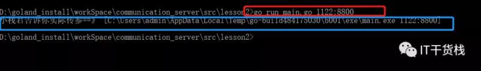

原文连接:https://www.cnblogs.com/it-carry/p/11738925.html
Hello，各位小伙伴大家好，我是小栈君，最近一段时间我们将继续分享关于go语言基础系列，当然后期小栈君已经在筹划关于java、Python，数据分析、人工智能和大数据等相关系列文章。希望能和大家一起学习进步，相互提高。
好了，话不多说，我们开始今天的分享，今天分享的主题是关于go语言系列中的延迟调用和作用域相关的知识。
延迟调用defer
在go语言中关键字 defer ⽤于延迟一个函数或者方法（或者当前所创建的匿名函数）的执行。注意，defer语句只能出现在函数或方法的内部。所以我们常用作关闭流处理或则需要进行延期处理的操作。
func main() {
defer fmt.Println("小栈君在测试defer") //main结束前调用
fmt.Println("this is a test")
/*
运行结果：
this is a test
小栈君在测试defer
*/
}defer语句经常被用于处理成对的操作，如打开、关闭、连接、断开连接、加锁、释放锁。通过defer机制，不论函数逻辑多复杂，都能保证在任何执行路径下，资源被释放。释放资源的defer应该直接跟在请求资源的语句后。
多个defer执行顺序
如果一个函数中有多个defer语句，它们会以LIFO（后进先出）的顺序执行。哪怕函数或某个延迟调用发生错误，这些调用依旧会被执⾏。
func test(x int) {
fmt.Println(10 / x)//x为0时，产生异常
}
func main() {
defer fmt.Println("111")
defer fmt.Println("222")
defer test(0)
defer fmt.Println("333")
/*
运行结果：
333
222
111
panic: runtime error: integer divide by zero
*/
}defer和匿名函数结合使用
小栈君这边直接为大家举例说明在匿名函数中使用defer 会有怎样的效果呢？
func main() {
a, b := 10, 20
defer func(x int) { // a以值传递方式传给x
fmt.Println("defer:", x, b) // b 闭包引用
}(a)
a += 10
b += 100
fmt.Printf("a = %d, b = %d\n", a, b)
/*
运行结果：
a = 20, b = 120
defer: 10 120
*/
}所以在运行结果上看，使用了defer会先进行传值，然后是最后才会计算出来
获取命令行参数
package main
import (
"fmt"
"os"
)
func main() {
// IT小栈君
agers := os.Args
// 如果用户输入不正确或个数不对 则提醒
if agers != nil && len(agers) < 2 {
fmt.Println("小栈君提醒你,您输入的位数不正确~")
return
}
fmt.Println("小栈君告诉你实际传参==》", agers)
}
运行结果如下：

作用域
作用域为已声明标识符所表示的常量、类型、变量、函数或包在源代码中的作用范围。就好比是你在行车过程中所能够行使的范围一样。
局部变量
在函数体内声明的变量、参数和返回值变量就是局部变量，它们的作用域只在函数体内：
func test(a, b int) {
var c int
a, b, c = 1, 2, 3
fmt.Printf("a = %d, b = %d, c = %d\n", a, b, c)
}
func main() {
//a, b, c = 1, 2, 3 //err, a, b, c不属于此作用域
{
var i int
i = 10
fmt.Printf("i = %d\n", i)
}
//i = 20 //err, i不属于此作用域
if a := 3; a == 3 {
fmt.Println("a = ", a)
}
//a = 4 //err，a只能if内部使用
}全局变量
在函数体外声明的变量称之为全局变量，全局变量可以在整个包甚至外部包（被导出后）使用。
var a int //全局变量的声明
func test() {
fmt.Printf("test a = %d\n", a)
}
func main() {
a = 10
fmt.Printf("main a = %d\n", a) //main a = 10
test() //test a = 10
}不同作用域同名变量
在不同作用域可以声明同名的变量，其访问原则为：在同一个作用域内，就近原则访问最近的变量，如果此作用域没有此变量声明，则访问全局变量，如果全局变量也没有，则报错。
var a int //全局变量的声明
func test01(a float32) {
fmt.Printf("a type = %T\n", a) //a type = float32
}
func main() {
fmt.Printf("a type = %T\n", a) //a type = int, 说明使用全局变量的a
var a uint8 //局部变量声明
{
var a float64 //局部变量声明
fmt.Printf("a type = %T\n", a) //a type = float64
}
fmt.Printf("a type = %T\n", a) //a type = uint8
test01(3.14)
test02()
}
func test02() {
fmt.Printf("a type = %T\n", a) //a type = int
}今天的分享就到这里就结束啦，如果你喜欢我的分享，麻烦你点击再看，分享或留言，我是小栈君，我们下期见，拜了个拜~

本文由博客一文多发平台 OpenWrite 发布！